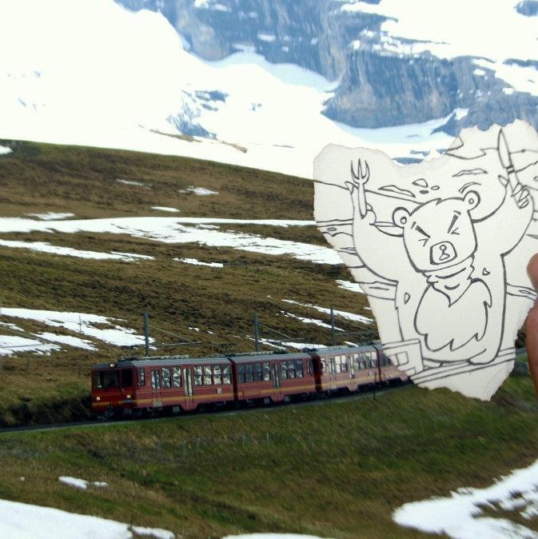

Physical props have always been used in collaborative settings to convey some socially accepted meaning. I have always been fascinated by the idea of merging both real and virtual objects and seek ways through which we can exploit this intimate relationship.
This is what my interpretation of the same idea looked liked, back when I was in school.



I believe that physical objects can be enhanced in ways not normally possible, using them to manipulate virtual information in an intuitive and natural manner. I now seek ways to create a unique interface, that uses these principles.